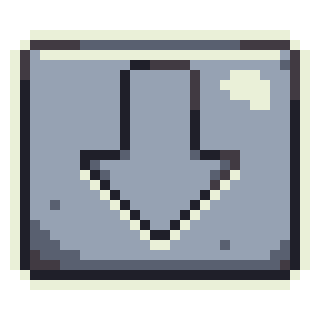

My name is Platon Kokhno and I am a Web Developer studying at Napier University. Last year, graduated from a Ukrainian school and passed the NMT exam, with strong communication skills and experience creating websites using CSS, HTML and Java Script.
Ukrainian (Native), English (Fluent), German (Fluent)
My native language is Ukrainian but I know English well and I have pretty good Knowledge of German
I Have Knowledge of Python, HTML, CSS and GDScript.
Also, I Have experience in working with Autodesk Inventor and 3D MAX
I have experience with graphic programms and editors.
I worked with Krita, Photoshop, Affinity Publisher and Gimp
Passed IELTS exam (2024)
Certificate NMT, National Multi Test (2023)
Certificate IT-Step Academy (2015-2021)
My course is Web Design and Development. Originally, I had a choice between Computing Science and WDAD courses. In the end, I chose the second option, because this course coincides with my interests in creating websites and designing UI.
A web developer is responsible for creating, maintaining, and optimizing websites and web applications. Their work ensures users have a seamless online experience.
Click on the button to expolore more:
